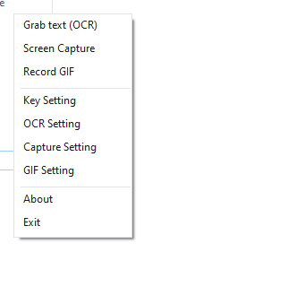
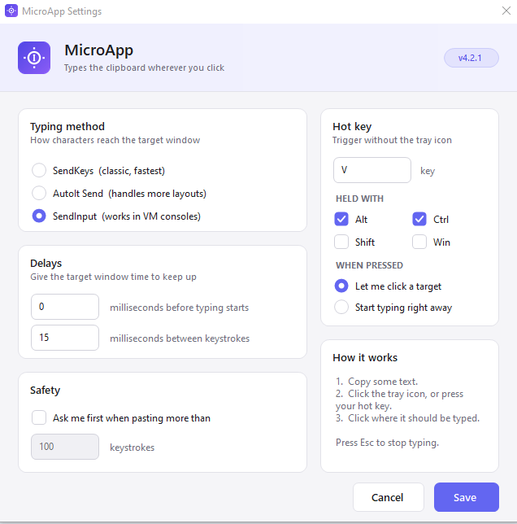
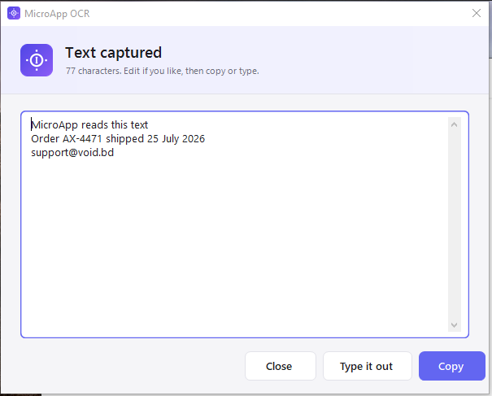
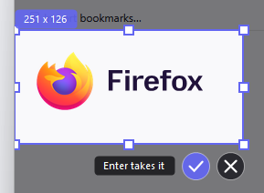
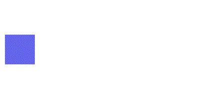
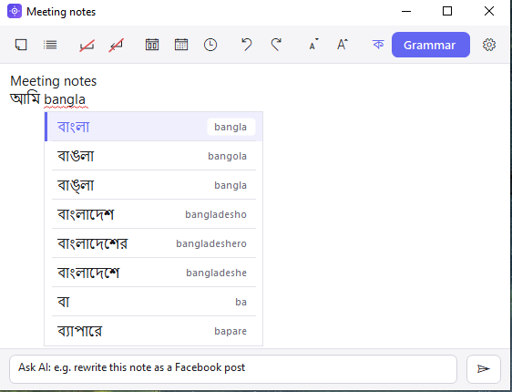

It types your clipboard,
key by key.
MicroApp sits in the Windows tray. Press Ctrl+Alt+V and it types whatever you copied as real key presses — scan codes, not a paste — so the text arrives in VM consoles, remote desktops, KVM and IPMI windows, and any field that refuses Ctrl+V. Every script, Bangla included.
- Version
- 5.1.0
- Download
- 1.2 MB
- Runs on
- Windows 10, 11
- Licence
- BSD 3-Clause
New in 5.1: the image editor works like Photoshop
Ctrl+Alt+E opens on whatever image is on the clipboard. The tools, the keys, the menus and the right-click menus follow Photoshop, so what you already know works here — and a screenshot goes from paste to annotated PNG without leaving the tray.
- M Selections that behave.Marquee, lasso, magic wand, with add, subtract and intersect. Transform Selection reshapes the marching ants and leaves the pixels alone; Free Transform moves them.
- Ctrl+T Scale, rotate, skew, distort, perspective.Photoshop's modifiers, numeric entry in the options bar, Enter to apply.
- B Brush, eraser, clone stamp, gradient, dodge and burn.Size, hardness, opacity and flow, with the bracket keys where you expect them.
- Ctrl+L Levels, Curves, Hue/Saturation, Color Balance.Every adjustment previews live, and the filters run over the selection only.
- Ctrl+J Layers with blend modes and styles.Lift a selection onto its own layer, then give it a drop shadow, glow, stroke or colour overlay. Fifty steps of history, and an asset library for the logos you stamp on everything.
The window at a glance: tools, the options for the tool in your hand, the canvas, and layers with history. A diagram, not a screenshot.
The rest of the tray menu

Every feature has a hot key you can change, and the menu lists them all. Nothing runs in the background except the tray icon itself; there is no account, no telemetry and no server.
Paste as keystrokes
Three typing engines, because no single one works everywhere. The default sends scan codes, which is what gets text into VM consoles and locked-down fields. Set the speed, a start delay, and whether Enter is pressed at the end.

Read text off the screen
Drag over a browser, a PDF, a video frame or a screenshot and the text comes back through Windows' own OCR — no upload. Ctrl+Alt+T does it without OCR: it picks the exact text out of any control, like a colour picker for words.

Capture a region
The screen freezes, you drag a frame, and the handles let you fix it before you take it. Lock the ratio or the exact pixel size when you need every capture to match.

Record a GIF or an MP4
The same frame records: an animated GIF for a bug report, or Ctrl+Alt+R an H.264 video with system sound and microphone, no time limit, pause and resume.

Notes that save themselves
A scratch-pad opens where the cursor is and keeps every word as you type, with spell check, an archive, and Bangla phonetic typing — write ami, get আমি. Optionally the same notes on every PC, mirrored through a free database you own.

Download 5.1.0
Free, and small enough to keep on a USB stick. Installing over an older version keeps your settings and notes.
- MicroApp-5.1.0-setup.exe 1.19 MB Installs for everyone, into Program Files. Needs an administrator.
- MicroApp-5.1.0-peruser-setup.exe 1.19 MB Installs for you only. No administrator needed.
- MicroApp-5.1.0-win-x64.zip 0.94 MB Portable. Unzip it anywhere and run MicroApp.exe.
Windows may warn that the publisher is unknown: the builds are not code-signed. The Microsoft Store listing is signed by the Store, and is currently version 4.9.3 — new versions land here first. Read the changelog, the manual, or how to install and start with Windows.